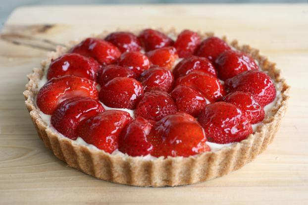

Tarte aux fraises

Une délicieuse tarte aux fraises et crème, parfumée et gourmande.
Ingrédients :
Pour un moule de 26 à 28 cm de diamètre
250g de farine
120g de beurre froid
1 œuf
1 sachet de sucre vanille
½ c à c de sel
Pour la crème pâtissière
50 cl de lait
120g sucre en poudre
4 jaunes d'œufs
40g de maïzena
1 gousse de vanille
Pour la tarte
500g de fraises
Préparation :
Étape 1 :
Préparation de la pâte sablée :
Coupez le beurre froid en petits morceaux et mettez-le de côté pour le faire ramollir à température ambiante. Déposez la farine dans un saladier et creusez-y un puits. Mettez le sucre et le sel.
Étape 2 :
Ajoutez le beurre au centre de la farine et effritez avec les doigts de façon à obtenir du sable. Creusez à nouveau un petit puits au centre de la pâte et cassez-y l'oeuf.
Étape 3 :
Pétrissez le tout pendant 2 minutes au moins. Faire une boule et formez la pâte un carré plat dans un film transparent et laissez-la reposer pendant 1 heure au réfrigérateur.
Étape 4 :
Préparation de la crème
Faire chauffer le lait avec une gousse de vanille fendue en deux. Mélangez les jaunes d'oeufs avec le sucre jusqu'à que le mélange blanchisse. Ajoutez la maïzena tamisée progressivement avec le fouet. Une fois le lait bien chaud en ajouter peu à peu sur la préparation tout en mélangeant.
Étape 5 :
Ensuite transvasez la préparation dans la casserole sur le feu doux pour ne pas brûler le fond de la casserole. Mélangez énergiquement jusqu'à épaississement de la crème et laisser bouillir au moins 2 minutes. Enlevez la gousse de vanille et laissez tiédir.
Étape 6 :
Pour la tarte :
Beurrez un moule à tarte. Sortez la pâte du réfrigérateur. Saupoudrez un peu de farine sur le plan de travail.
Étape 7 :
Étalez la pâte avec un rouleau à pâtisserie en lui donnant la forme d'un disque un peu plus grand que le moule et d'une épaisseur d'environ 4 millimètres.
Étape 8 :
Garnir le moule de pâte. Coupez ensuite l'excédent en passant le rouleau sur le rebord du moule. Piquez le fond avec une fourchette.
Étape 9 :
Préchauffez le four à 180°C (th.6). Découpez en disque le papier sulfurisé à la taille du moule et posez-le sur le fond. Recouvrez de haricots secs. Cuire la pâte à blanc pendant 15 minutes.
Étape 10 :
Sortez la tarte du four retirez les légumes secs et le papier sulfurisé et laissez refroidir. Étalez la crème tiède dans le fond de tarte. Équeutez les fraises et coupez-les en deux. Les disposer par-dessus la crème. Badigeonnez la tarte avec de la gelée aux fruits ou du nappage.